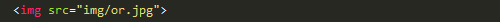
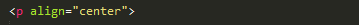
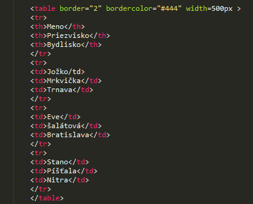

Html je značkový jazyk určený na vytváranie webových stránok a iných informácií zobraziteľných vo webovom prehliadači. HTML kladie dôraz skôr na prezentáciu informácií (odseky, fonty, úprava písma, tabuľky atď. )ako na sémantiku (význam slov). V tejto časti predstavým jednoduché html tagy a ich funkcie v stránke.
Odstavec s tučným textom, s kurzivou. Modrý text.
Odstavec s tučným kurzivom.
Text po zalomení riadku patrí do toho istého odstavcu.
Obrázok sa do dokumentu vkladá nepárovým tagom.
Horizontálna čiara sa vkladá tagom HR. Má atribúty ktorými nastavuje šírku, zarovnanie a farbu.
Zarovanie odstavcu na stred
Väčšina objektov(odstavce, tabulky, obrázky a pod.) na stránke sa môže zarovnat vlavo, na stred alebo na pravo.Robí sa to všeobecným atribútom "p align" +hodnota(left,center,right). Napríklad tento odstavec 
je deklarovaný zápisom a aj zarovnaný na stred
Na vytvorenie tabulky používame párove tagy: table, tr, td.
TR vytvára riadky v tabulke, TD vytvára bunky a TH sa dá použiť namiesto TD ale je to hlavička tabulky.
| Meno | Priezvisko | Bydlisko |
|---|---|---|
| Jožko | Mrkvička | Trnava |
| Eve | šalátová | Bratislava |
| Stano | Píšťala | Nitra |